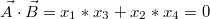
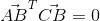

向量B:

它们的内积为0：

这时就说A与B正交。
看到这，相信很多人想起了垂直的概念，确实，两条向量垂直的条件也是内积为0，那么正交与垂直的区别在哪里？答案藏在了高维的空间里。
接下来推广到高维空间(不是现实中的高维空间，而是矩阵中的高维空间)，两个空间A,B是正交的充要条件是A中的任意向量与B中的任意向量正交。这个条件很苛刻，一般是无法想象出来，只能靠计算才能得知，同时也是因为这个条件，所以正交跟垂直才有了本质上的区别。
举个例子，墙与地板是正交的么？答案是否定的。因为墙与地板相交于同一条向量，这条向量同时属于墙与地板，但这条向量肯定不能正交自己，所以墙与地板不是正交的。这时，是否感觉到了垂直于正交的区别。明显墙面是垂直于地板面的，因为之前高中数学有学过两个平面垂直的充要条件，就是一个平面上有一条向量(法向量)垂直于另一个平面即可。但是正交的要求是所有向量都得垂直于另一个平面，这就是区别所在。
那么再举个例子，墙上一条垂直于地板的向量于地板是正交的么？答案是肯定的。因为这条向量所构成的直线空间中，都正交与地板空间里的任意向量。
正交与垂直的区别说完了。再扯点别的吧，如何判断两个空间正交。定义已经给出，但还没论证过，为什么两向量内积为0就正交？
首先我们来到最熟悉的勾股定理，已知一直角三角形ABC：
现在用向量来表示这个图：
所以内积为0就代表两个向量垂直，也就是正交（因为正交是垂直的一种推广，但要切记两者是不一样的）。
换用我们之前学过的矩阵，其实内积也可以表示为矩阵的乘法：
所以向量正交也可以表示为：

这种形式的正交也可以用勾股定理证明：
好了，有关正交的知识就暂且先告一段落，正交在矩阵尤其是机器学习中用处很多，这里只做基础介绍不展开讲，以后遇到相关问题再回头过来分析~~~下一章，讲讲矩阵的四大子空间。